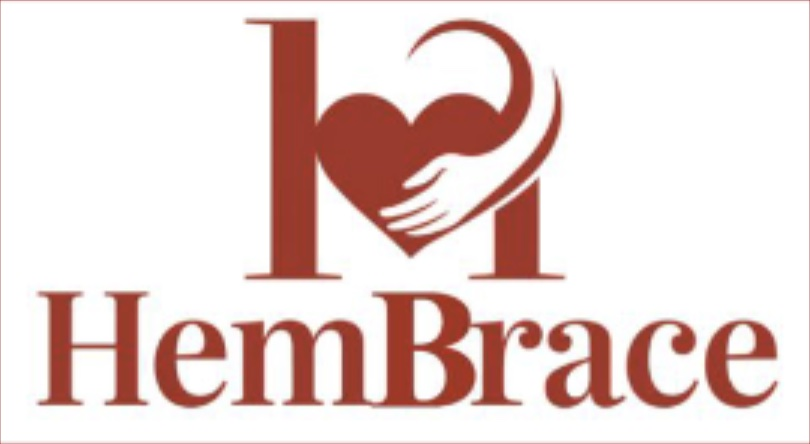
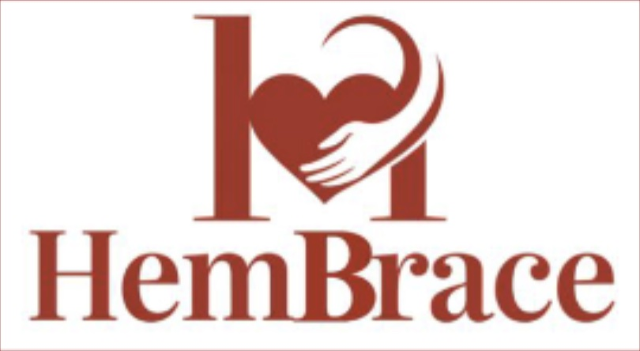

Software Engineering
Hawaiian Airlines: Share My Trip
Over the summer, I had the incredible opportunity of interning with the Hawaiian Airlines mobile team. During this internship, I independently implemented the new "Share My Trip" feature for the Hawaiian Airlines mobile app. This new feature is now live in production for both iOS and Android users! With "Share My Trip," guests can effortlessly share their travel details with family and friends, keeping loved ones informed and engaged throughout their journey. This enhancement not only adds a layer of convenience but also helps ensure peace of mind for travelers and their families.
DEBUT: Block Phantom Limb Pain
Working on DEBUT, my project team, we developed a responsive embedded system that detects the motion phase of an amputated limb during walking and delivers targeted electrical stimulation through a TENS unit at key pain-triggering moments to combat phantom limb pain. Using a gyroscope to pinpoint the high-load phase, the device continuously tracks the limb's motion cycle. When the limb reaches the midpoint of the walking cycle, a gentle electrical pulse is delivered via the TENS device to interfere with the pain. This stimulation acts as a neural distration, reducing the perception of pain. For more information, please click on the image.
DEBUT: HemBrace
In my project team’s second project, we developed a self-regulating device for postpartum hemorrhage that autonomously applies appropriate pressure in response to recorded blood loss. Our device uses a calibrated flow rate sensor to measure the amount of blood lost that is funneled from the vaginal canal through the sensor using a medical drape. In response to blood loss levels, our Arduino-based embedded system sends signals to a calf massager to inflate. The calf massager has been reconfigured and sewn into an abdominal wrap that inflates, applying pressure to treat blood loss due to postpartum hemorrhage. Finally, using piezo sensors embedded in the wrap, the system monitors and reports applied pressure for verification purposes. I was heavily involved in the coding aspect of this deice, leading the software lab team throughout the implementation.
 
